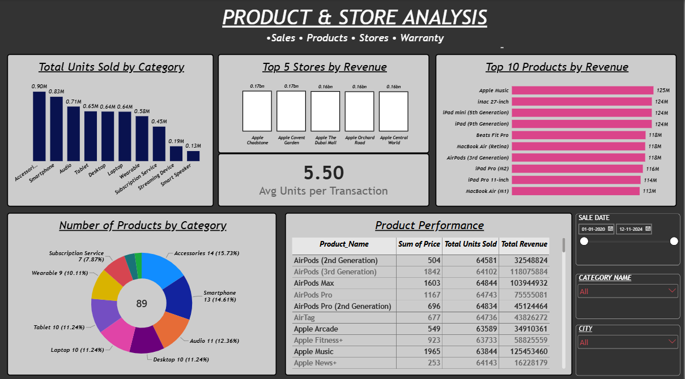
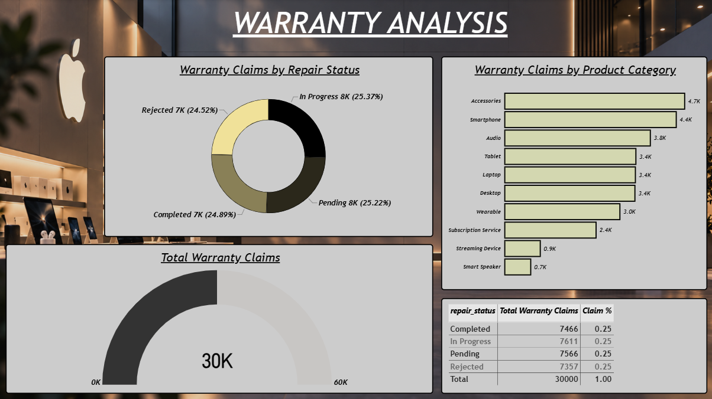

Apple Retail Analysis
Exploring retail sales data to uncover trends, evaluate product and store performance, and understand business growth over time. Transforming raw data into meaningful insights to support smarter business decisions.
THE QUESTION
Problem Statement
Retail businesses generate large amounts of sales data across products, stores, and different time periods. However, raw sales records alone do not provide a clear picture of how the business is actually performing. It can be difficult to identify changes in sales performance, recognize important patterns over time, and understand which products and stores are contributing most to overall performance. Without properly analyzing this information, useful trends can remain hidden within the data. This project focuses on transforming retail sales data into clear, meaningful insights that help understand sales performance, product activity, store performance, and changes over time.
INSIDE THE REPORT
Page Features
Executive Overview
This page provides a high-level view of the overall retail business performance. It brings together key metrics such as total revenue, total transactions, total units sold, and warranty claims, along with revenue trends by year, category, product, and city. The page gives a quick overview of sales performance and helps identify the major contributors to overall revenue. It also makes it easier to compare performance across different areas of the business and recognize changes in sales activity over time.

Product & Store Analysis
This page focuses on product and store performance in greater detail. It compares units sold across categories, highlights the top-performing stores and products by revenue, and shows the number of products available within each category. A detailed product performance table also provides a closer look at product price, units sold, and revenue. These comparisons help identify which products and locations are contributing most strongly to overall sales performance.

Warranty Analysis
This page provides a detailed view of warranty claim activity. It shows the distribution of claims across repair statuses and product categories, along with the total number of warranty claims. The analysis helps provide a clearer understanding of warranty activity and how claims are distributed across different areas of the business. It also helps highlight which categories and repair outcomes account for a larger share of warranty activity.

METHODOLOGY
Analytical Approach
The analysis began with preparing and understanding the retail data before moving into the actual analysis. The sales dataset contained more than one million records covering multiple years of retail activity, making data preparation an important part of the workflow. Python and Pandas were used to inspect the dataset, understand its structure, check the available fields, and prepare the data for further analysis. The sales date field was converted into a proper datetime format so that the records could be analyzed consistently across different time periods. The data was also examined across its key dimensions, including sales, products, stores, quantities, and dates, to establish a reliable foundation for the analysis. This preparation made it possible to work with the large dataset more efficiently and provided a structured foundation for the later stages of the project.
Once the data was prepared, the analysis focused on understanding retail performance across products, stores, categories, and time. Python and Pandas were used to explore the sales records and examine how sales activity changed across the available years. SQL was then used to query and organize the data around business-focused questions, making it easier to compare performance and identify the products and stores contributing to sales. The analysis considered measures such as revenue, transactions, units sold, product activity, and warranty claims, allowing different aspects of the retail business to be viewed together rather than relying on a single metric. Looking at these measures across different dimensions helped provide a broader understanding of sales performance and business activity.
The final stage focused on transforming the analysis into an interactive Power BI report that could communicate the results clearly. The prepared data was used to create key performance indicators and visualizations covering overall revenue, transactions, units sold, warranty claims, yearly trends, category performance, product performance, and store activity. The report was organized into separate pages so that overall business performance could be viewed first, followed by more detailed product and store analysis and a dedicated view of warranty activity. Filters and interactive visuals allow the data to be explored from different perspectives, while detailed tables provide additional information about individual products and their performance. The final dashboard brings the different stages of the analysis together in a clear format, making important patterns, comparisons, and areas of business performance easier to understand.
THE BUILD
Tools & Technologies
GET IN TOUCH
Let’s Connect
Interested in working together, discussing a project, or simply connecting? I’d love to hear from you!
samiafathima28@gmail.com